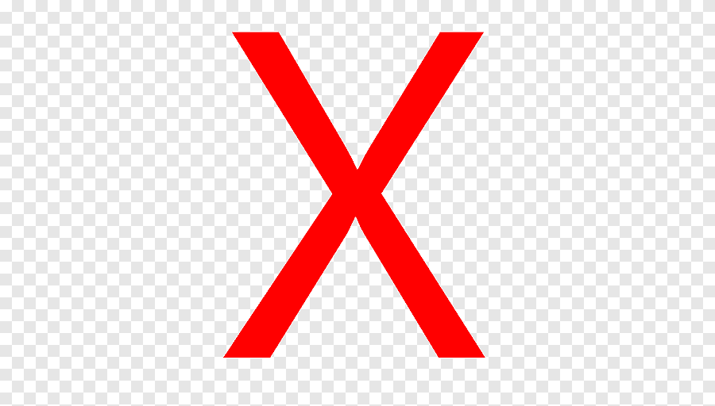

Rock & Rifs
ConocenosGuitarras de artistas reconocidos
Guitarra Fender stratocaster
Diseño de Eddie Van Halen de "Van Halen"
$18,000
Guitarra Gibson Flying V
Disseño usado por Dave Mustaine de "Megadeth"
$25,000
Guitarra Gibson SG Brazo Doble
Diseño Usado por Don Felder de "The Eagles"
$63,000
Guitarra BC. Rich Warlock
Diseño usado por Kerry King de "slayer"
$13,000
Suena como tus artistas favoritos
Pedal de distorción "Boss DS-1"
Un clásico en el Metal que no puede faltar en tu colección
$2,200
Pedalera multiefectos Mooer GE-300
Una pedalera multiefectos muy completa por este gran precio
$15,000
Pedal Rowin de "Noise-Gate"
Evita que todo ese ruido sucio te moleste al tocar
$200
Pedal Digitech "Whammy"
Pedal famoso que utiliza Tom Morello en el solo de "Like a Stone"
$6,000
Los mejores Amplificadores
Amplificador Orange Crush 20
Uno de los mejores amplificadores Calidad-precio
$3,100
Amplificador Fender Champion 40
Un Amplificador bastante potente para su precio
$5,000
Amplificador Marshall DSL20CR
Un Amplificador muy potente y elegante funcional para cualquier presentacion
$18,715
Amplificador Boss Katana 50 Mkii
El amplificador mas popular de esta marca
$5,100
| Caracterisricas | Gibson SG | Fender Telecaster | Gibson Les Paul | Fender Jaguar | Gibson Explorer |
| Puente fijo |  | ||||
| Perilla de volumen y tono | |||||
| Cable recomendado | 90° | 90° | Recto | Recto | 90° |
| Peso | 5.5 Kg | 4.6 Kg | 9.07 Kg | 3.7 Kg | 3 Kg |